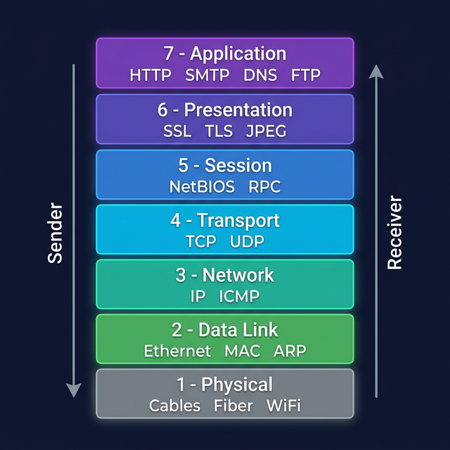

OSI Model
The Open Systems Interconnection model — a 7-layer conceptual framework that standardises how different computer systems communicate over a network. Essential knowledge for every security professional.
What is the OSI Model?
Developed by the International Organization for Standardization (ISO) in 1984, the OSI model divides network communication into 7 distinct layers, each with a specific function. It provides a universal language for understanding how data flows from application to physical wire — and then back again on the receiving end.

OSI Model — 7 Layers with key protocols at each layer
Data traveling down the stack (from the sender) gets encapsulated — headers are added at each layer. Data traveling up the stack (at the receiver) gets de-encapsulated — headers are stripped off layer by layer.
Memory Aid — Mnemonics
Use these well-known phrases to remember all 7 layers in order (from Layer 7 down to Layer 1):
"All People Seem To Need Data Processing"
"Please Do Not Throw Sausage Pizza Away"
All 7 Layers — In Detail
Each layer is described below with its function, PDU (Protocol Data Unit), protocols, and security relevance. Click to expand each card.
Layer 7 — Application
The Application layer is the topmost layer and the one closest to the end-user. It provides network services directly to applications — web browsers, email clients, file-transfer programs. It does NOT refer to the application itself, but rather the interface between applications and the network below it.
Layer 6 — Presentation
The Presentation layer acts as the translator between the application and the network. It is responsible for data formatting, encoding/decoding, compression, and encryption/decryption. It ensures that data sent by one system can be read by another regardless of internal data representation differences (e.g., EBCDIC vs ASCII).
Layer 5 — Session
The Session layer manages connections (sessions) between applications — establishing, maintaining, and terminating them. It handles session checkpointing and recovery, so long data transfers can resume from a checkpoint if interrupted rather than restarting from scratch. It coordinates which side transmits (full duplex vs half duplex).
Layer 4 — Transport
The Transport layer provides end-to-end communication between hosts and is responsible for segmentation, flow control, and error recovery. TCP provides reliable, ordered, error-checked delivery; UDP is connectionless and faster but offers no guarantees. Ports live at this layer — they allow multiple services to share the same IP address.
Layer 3 — Network
The Network layer handles logical addressing and routing — determining the best path for data to travel from source to destination across multiple networks. IP addresses (IPv4 / IPv6) operate here. Routers are the key Layer 3 devices: they read the destination IP address and forward packets hop-by-hop toward the destination.
Layer 2 — Data Link
The Data Link layer provides node-to-node data transfer on the same physical network segment. It packages raw bits from the Physical layer into frames, adds source and destination MAC addresses, and provides error detection (CRC checksums). It has two sub-layers: LLC (Logical Link Control) and MAC (Media Access Control). Switches operate at Layer 2.
Layer 1 — Physical
The Physical layer is the foundation — it deals with the raw transmission of bits over a physical medium (copper cable, fiber optic glass, or radio waves). It defines the hardware specifications: voltage levels, cable types, pin layouts, radio frequencies, and the timing of signal pulses. No concept of addressing exists here — just 1s and 0s.
Layer Quick Reference Table
A one-glance summary of all 7 layers for rapid revision:
| # | Layer | PDU | Key Protocols | Security Threats |
|---|---|---|---|---|
| 7 | Application | Data | HTTP, FTP, SMTP, DNS, SSH | SQLi, XSS, CSRF, phishing |
| 6 | Presentation | Data | SSL/TLS, JPEG, ASCII, UTF-8 | SSL stripping, weak ciphers |
| 5 | Session | Data | NetBIOS, RPC, PPTP | Session hijacking, fixation |
| 4 | Transport | Segment / Datagram | TCP, UDP, SCTP | SYN flood, port scanning |
| 3 | Network | Packet | IP, ICMP, OSPF, BGP | IP spoofing, BGP hijack |
| 2 | Data Link | Frame | Ethernet, ARP, MAC, 802.11 | ARP poisoning, MAC flood |
| 1 | Physical | Bit | Ethernet cables, Fiber, Wi-Fi RF | Wiretapping, jamming |
Encapsulation & De-encapsulation
When data travels down the OSI stack on the sender's side, each layer adds its own header (and sometimes a trailer) — this is called encapsulation. On the receiver's side, each layer reads and strips its header — called de-encapsulation.
SENDER SIDE (Encapsulation — headers added going DOWN):
===============================================================
Layer 7 App → [ DATA ]
Layer 6 Pres → [ DATA ] (encoding/encrypt)
Layer 5 Session → [ DATA ] (session token)
Layer 4 Transport → [ TCP HDR | DATA ] (port numbers, seq)
Layer 3 Network → [ IP HDR | TCP HDR | DATA ] (src/dst IP)
Layer 2 Data Link → [ ETH HDR | IP | TCP | DATA | ETH TRAILER ]
Layer 1 Physical → 10101100101011100010... (raw bits on wire)
RECEIVER SIDE (De-encapsulation — headers stripped going UP):
===============================================================
Layer 1 Physical → bits received from cable/air
Layer 2 Data Link → reads MAC, strips Ethernet frame
Layer 3 Network → reads IP, strips IP header
Layer 4 Transport → reads port, reassembles segments
Layer 5 Session → manages session state
Layer 6 Pres → decrypts/decodes data
Layer 7 App → application receives clean dataOSI vs TCP/IP Model
The TCP/IP model is what the internet actually uses. The OSI model is the theoretical reference. Understanding how they map together is crucial:
| OSI Layers | TCP/IP Layer | Protocols |
|---|---|---|
| 7 App + 6 Pres + 5 Session | Application | HTTP, HTTPS, FTP, SMTP, DNS |
| 4 Transport | Transport | TCP, UDP |
| 3 Network | Internet | IP, ICMP, ARP |
| 2 Data Link + 1 Physical | Network Access | Ethernet, Wi-Fi, PPP |